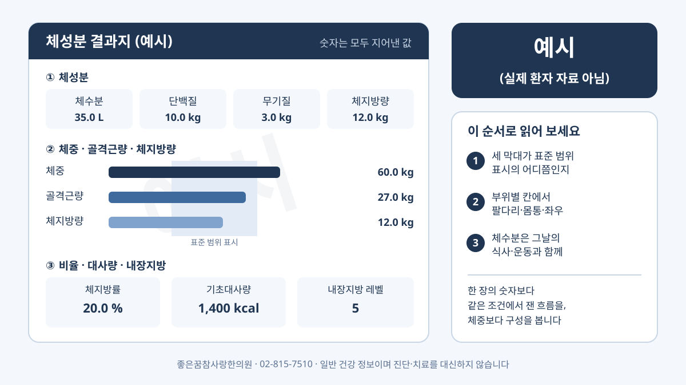

아침에 체중계에서 내려오면서 한숨을 쉬어 본 적, 한 번쯤 있으시지요. 어제 저녁을 조금 짜게 먹었을 뿐인데 숫자가 올라가 있고, 그 숫자 하나 때문에 하루 기분이 정해져 버립니다. 저도 그렇습니다. 숫자는 짧고 분명해서, 한번 눈에 들어오면 다른 생각을 밀어냅니다.
한의원에서 인바디를 재고 나서도 비슷한 장면이 생깁니다. 결과지를 받아 들고 맨 위 체중 칸만 보신 뒤, 종이를 반으로 접어 가방에 넣으시는 거지요. 그 종이 한 장에는 체중 말고도 꽤 많은 이야기가 들어 있는데 말입니다.
이 페이지는 그 종이 한 장을 함께 펼쳐 보려고 만들었습니다.
먼저 한 가지 말씀드릴 것이 있습니다. 여기에는 환자분의 실제 결과지나, 누군가의 숫자가 이만큼 달라졌다는 비교를 싣지 않습니다. 의료법이 그런 비교와 개인의 사례를 광고에 쓰지 못하게 하고 있고, 저도 그 뜻에 공감합니다. 한 사람의 숫자는 그분의 몸과 생활에서 나온 것이라, 다른 분께 그대로 옮겨 드릴 수 없기 때문입니다.
그래서 이 글은 일반적인 이야기만 합니다. 인바디가 무엇을 재는지, 결과지를 어떤 순서로 읽으면 좋은지, 잴 때 무엇을 맞추면 좋은지, 그리고 제가 진료실에서 이 종이를 어떻게 쓰는지입니다. 그림 속 결과지도 설명을 위해 지어낸 숫자로 만든 예시입니다.
인바디는 무엇을 재나요
인바디는 몸에 아주 약한 전류를 흘려 보내고, 그 전류가 몸을 얼마나 쉽게 지나가는지를 잽니다. 이런 방식을 생체전기저항 분석이라고 부릅니다. 이름은 어렵지만 원리는 단순합니다. 우리 몸에서 물을 많이 머금은 근육은 전기가 잘 통하고, 물이 적은 지방은 전기가 덜 통합니다.
장비는 이렇게 얻은 저항값에 키, 체중, 나이, 성별을 넣어 근육과 지방, 수분의 양을 계산해 냅니다. 몸속을 직접 들여다보는 사진이 아니라, 전기가 지나간 길을 보고 짐작하는 셈입니다. 이 점을 기억해 두시면 결과지의 숫자를 대할 때 마음이 한결 편해집니다.
좋은꿈참사랑한의원에 있는 장비는 인바디 770입니다. 맨발로 발판 전극을 밟고, 두 손으로 손잡이 전극을 잡고 잠시 서 계시면 됩니다. 손과 발 양쪽에서 전류를 흘려 보내기 때문에 팔, 다리, 몸통을 나누어 볼 수 있습니다.
인바디가 알려 줄 수 있는 것은 이런 것들입니다.
- 체중 안에 근육과 지방, 수분이 대략 어떤 비율로 들어 있는지
- 팔다리와 몸통의 근육·지방이 어떻게 나뉘어 있는지, 좌우 차이가 있는지
- 같은 조건에서 몇 번 쟀을 때 몸의 구성이 어느 방향으로 움직이는지
반대로 인바디가 알려 주지 못하는 것도 분명히 있습니다.
- 어떤 병이 있는지 없는지
- 혈당, 혈압, 콜레스테롤 같은 혈액과 혈관의 상태
- 잠을 잘 자는지, 소화가 편한지, 마음이 지쳐 있는지
- 왜 이런 몸의 구성이 되었는지, 그 사연
추정이라는 말이 실망스럽게 들리실 수도 있겠습니다. 그런데 저는 오히려 이 말 덕분에 숫자를 덜 무서워하게 되었습니다. 결과지의 숫자가 지난번보다 조금 달라졌을 때, 몸이 정말 변한 것인지 그날 몸속 물의 사정이 달랐던 것인지 한 번 더 생각해 볼 여유가 생기기 때문입니다.
같은 이유로 인바디 숫자는 소수점 아래까지 믿기보다 큰 방향을 읽는 데 쓰는 편이 맞다고 생각합니다. 지난달보다 몇백 그램 달라진 것에 마음을 쓰기보다, 몇 주에 걸쳐 같은 쪽으로 움직이는지를 보시는 것이 몸에도 마음에도 덜 부담스럽습니다.
저는 인바디를 몸을 판정하는 성적표라기보다, 그날의 몸을 한 장에 남겨 두는 기록으로 생각합니다. 기록은 혼자 있을 때보다 다른 이야기와 나란히 놓일 때 쓸모가 커집니다.
결과지 한 장, 위에서부터 읽기
결과지를 처음 받으면 숫자와 막대가 너무 많아 어디부터 봐야 할지 막막합니다. 아래 표는 결과지에 흔히 나오는 칸을 위에서부터 순서대로 정리한 것입니다. 결과지 종류와 장비 설정에 따라 칸의 이름과 배치는 조금 다를 수 있습니다.
표준 범위는 일부러 숫자로 적지 않았습니다. 기준은 나이와 성별, 키에 따라 다르고, 장비마다 계산 방식도 다르기 때문입니다. 결과지에 그려진 표준 범위 막대를 보시되, 그 막대는 같은 성별과 키의 기준과 견준 것이지 내 몸의 정답은 아니라는 점을 함께 기억해 주세요.
| 항목 | 무엇인지 | 볼 때 기억할 점 |
|---|---|---|
| 체수분 | 몸속에 있는 물의 총량 | 식사, 물, 땀, 짠 음식에 따라 하루 사이에도 움직입니다 |
| 단백질 | 근육과 세포를 이루는 재료의 양 | 근육량과 함께 움직이는 경우가 많아 따로 떼어 보지 않습니다 |
| 무기질 | 뼈와 몸속 미네랄의 추정량 | 뼈 검사를 대신하지 않습니다 |
| 체지방량 | 몸에 있는 지방의 무게 | 체중이 그대로여도 이 칸은 달라질 수 있습니다 |
| 골격근량 | 팔다리와 몸통을 움직이는 근육의 양 | 집 체중계의 근육량과는 담는 범위가 달라 숫자가 더 작게 나옵니다 |
| 체지방률 | 체중 가운데 지방이 차지하는 비율 | 체중과 체지방량이 함께 변하면 비율은 그대로일 수 있습니다 |
| 부위별 근육·지방 | 오른팔·왼팔·몸통·오른다리·왼다리로 나눈 값 | 어느 정도의 좌우 차이는 대부분의 사람에게 있습니다 |
| 세포외수분비 | 몸속 물이 세포 안팎에 나뉜 비율 | 붓기와 함께 보는 칸이며, 그날 컨디션에 흔들릴 수 있습니다 |
| 기초대사량 | 가만히 있을 때 쓰는 에너지의 추정값 | 직접 잰 값이 아니라 근육량 등으로 계산한 숫자입니다 |
| 내장지방 레벨 | 배 속 지방의 정도를 단계로 나타낸 추정값 | 복부 영상 검사를 대신하지 않습니다 |
처음에는 이 순서로만 보셔도 충분합니다. 먼저 체중, 골격근량, 체지방량 세 막대가 표준 범위 표시의 어디쯤 있는지 봅니다. 다음으로 부위별 칸에서 팔다리와 몸통, 좌우가 어떤지 살핍니다. 마지막으로 체수분과 세포외수분비를 그날 무엇을 먹고 어떻게 지냈는지와 함께 봅니다.
결과지 아래쪽에는 체질량지수(BMI)처럼 키와 체중만으로 계산한 칸도 있습니다. 이 숫자는 근육이 많은 사람과 지방이 많은 사람을 구별하지 못합니다. 그래서 저는 체질량지수만 따로 떼어 보기보다, 같은 종이에 있는 골격근량과 체지방률 옆에 두고 함께 읽습니다.
딱 두 칸만 기억하신다면 저는 골격근량과 체지방량을 권합니다. 체중이 같아도 이 두 칸은 서로 다른 방향으로 움직일 수 있어서, 체중 한 칸만 볼 때 놓치는 것을 보여 줍니다.
기초대사량이 낮게 나왔다고 해서 몸에 큰 문제가 있다는 뜻은 아닙니다. 대개는 근육량이 적거나 체격이 작다는 뜻에 가깝습니다. 이 숫자를 보고 먹는 양을 더 줄이시는 분이 있는데, 근육이 적은 상태에서 굶으면 근육이 함께 빠질 수 있어 저는 오히려 말리는 편입니다.
측정 전에 지켜 주시면 좋은 것
인바디는 몸속 수분의 흐름을 보고 계산하는 장비라, 재기 직전에 무엇을 했는지에 따라 숫자가 흔들립니다. 같은 사람이 같은 주에 재도 아침 공복과 저녁 식사 뒤의 숫자는 다르게 나올 수 있습니다. 아래 몇 가지만 맞춰 주시면 지난번과 견주어 보기가 훨씬 쉬워집니다.
- 재기 전 두 시간쯤은 든든한 식사를 피해 주세요. 꼭 공복일 필요는 없지만, 매번 비슷한 식사 간격이면 좋습니다.
- 재기 전에 화장실에 다녀와 주세요.
- 운동, 사우나, 반신욕 직후에는 재지 않습니다. 땀과 혈액의 흐름 때문에 수분 분포가 평소와 달라집니다.
- 시계, 반지, 팔찌 같은 금속 장신구는 빼 두시고, 주머니 속 휴대전화와 열쇠도 꺼내 주세요.
- 양말을 벗고 맨발로 올라가야 해서, 벗기 쉬운 양말과 가벼운 옷이 편합니다.
- 다음에 다시 잴 때도 되도록 같은 시간대를 골라 주세요.
장비 위에 올라가신 뒤에는 자세도 숫자에 영향을 줍니다. 발뒤꿈치와 앞꿈치가 발판 전극에 고르게 닿도록 서 주시고, 손잡이는 양손에 같은 힘으로 가볍게 쥐어 주세요. 팔은 몸통에서 살짝 떨어뜨려 겨드랑이가 붙지 않게 하고, 측정이 끝날 때까지 말하거나 움직이지 않고 편하게 숨을 쉬시면 됩니다.
겨울에는 한 가지를 더 부탁드립니다. 상도동은 언덕길과 계단이 많아서, 추운 날 걸어오시면 손발이 차고 숨이 찬 채로 도착하시곤 합니다. 손발이 얼고 피부가 바짝 마른 상태에서는 전극에 닿는 상태가 평소와 달라질 수 있고, 언덕을 막 오른 몸은 가벼운 운동을 마친 것과 비슷합니다.
그래서 도착하시면 외투를 벗고 10분쯤 앉아 숨을 고르시라고 권합니다. 손이 차면 두 손을 비비거나 잠시 겨드랑이에 끼워 데우시면 됩니다. 뜨거운 물에 손을 오래 담그면 땀이 나서 오히려 방해가 될 수 있습니다.
두꺼운 니트와 기모 바지를 입은 날은 옷 무게만큼 체중이 더 나오는 것이 자연스럽습니다. 여름에 얇은 옷으로 잰 결과와 겨울 결과를 그대로 견주지 않는 것도 그래서입니다. 생리 직전이나 생리 중에는 몸의 수분이 달라질 수 있어, 그 시기의 숫자 하나로 판단하지 않습니다.
두 장을 비교할 때 보는 것
결과지가 두 장, 세 장 모이면 그때부터 인바디가 정말 쓸모 있어집니다. 다만 두 장을 나란히 놓았을 때 가장 먼저 볼 것은 숫자가 아니라 두 번의 측정 조건입니다.
- 두 번 모두 비슷한 시간대에 쟀는지
- 식사와 물, 운동, 화장실 조건이 비슷했는지
- 옷차림과 계절이 크게 다르지 않았는지
- 전날 술자리나 짠 음식, 늦은 야식이 있었는지
조건이 다르다면, 숫자 차이가 몸의 변화 때문인지 조건 때문인지 나누기 어렵습니다. 송년회 다음 날 아침에 재서 체중과 체수분이 함께 올라갔다면, 지방이 늘었다고 읽기보다 붓기와 수분 쪽을 먼저 생각해 봅니다.
조건이 비슷하다면 그다음에는 한 번의 숫자보다 흐름을 봅니다. 체수분은 며칠 사이에도 움직이지만, 근육과 지방은 몇 주에 걸쳐 천천히 움직이는 경우가 많습니다. 그래서 저는 몇 주 간격을 두고 두세 번 재어, 같은 방향의 변화가 이어지는지를 보시라고 말씀드립니다. 매주 재고 싶은 마음은 이해하지만, 너무 자주 재면 오히려 흔들림만 보이기 쉽습니다.
마지막으로 체중보다 구성을 봅니다. 체중, 골격근량, 체지방량, 체지방률, 체수분을 같은 순서로 나란히 적어 보세요. 체중은 그대로인데 골격근량과 체지방량이 서로 다른 방향으로 움직였다면, 체중계만으로는 알 수 없던 이야기가 거기 있습니다.
부위별 칸에서 좌우 숫자가 다르게 나와 놀라시는 분도 많습니다. 사람의 몸은 원래 완전히 좌우가 같지 않고, 주로 쓰는 손과 발, 가방을 메는 쪽, 예전에 다쳤던 자리에 따라 어느 정도 차이가 생깁니다. 그 차이가 같은 조건에서 계속 보이는지, 그쪽에 힘 빠짐이나 저림, 붓기가 함께 있는지를 보는 것이 숫자 자체보다 중요합니다.
한쪽 팔다리가 부어 있으면 그쪽 수분이 늘어 근육량이 더 많게 계산되기도 합니다. 그러니 근육량이 많이 나온 쪽이 늘 더 튼튼하다고 단정하지 않고, 실제로 힘을 쓸 때 어떤지 함께 여쭙습니다.
결과지 여백에 그날의 한 줄을 적어 두시면 더 좋습니다. 몇 시에 쟀는지, 무엇을 먹었는지, 요즘 잠은 어떤지, 바지 허리가 어떻게 느껴지는지 같은 것들입니다. 숫자만 남은 종이보다 그 한 줄이 붙은 종이가 다음 진료에서 훨씬 많은 이야기를 해 줍니다.
진료실에서 인바디를 이렇게 씁니다
저는 결과지를 펼치기 전에 맥부터 짚습니다. 오시는 분 모두 맥을 짚는 것이 제 진료의 시작이고, 인바디도 그 뒤에 따라오는 참고 자료 가운데 하나입니다. 숫자가 아무리 분명해 보여도, 그 숫자 하나로 몸을 판단하지 않으려고 합니다.
먼저 이렇게 여쭙니다
- 오늘 어떻게 오셨는지, 언덕길을 서둘러 걸어오셨는지
- 마지막 식사는 몇 시였고, 물이나 차는 얼마나 드셨는지
- 요즘 잠은 어떠신지, 자다가 깨시는지
- 식사 뒤 속은 편한지, 대변은 어떤지
- 손발이 찬지, 추위나 더위를 유난히 타시는지
- 드시는 약과 몸속 전자 의료기기, 임신 가능성이 있는지
같은 체지방량이라도 잠을 설치는 분과 소화가 무거운 분은 생활에서 먼저 손볼 곳이 다릅니다. 숫자는 같아도 사연이 다르기 때문입니다. 그래서 저는 결과지보다 그 사연을 먼저 듣고 싶습니다.
한의학에서는 오래전부터 기운이 쉽게 처지는지, 손발이 찬지, 소화가 약한지를 몸 전체의 리듬 속에서 살펴 왔습니다. 인바디의 숫자는 그 오래된 질문들을 대신하지 않습니다. 다만 맥과 혀, 배를 살피고 생활 이야기를 들은 뒤에 결과지를 펼치면, 숫자가 그 이야기의 어느 대목과 이어지는지 조금 더 또렷하게 보일 때가 있습니다.
예를 들어 근육이 적게 나온 칸을 보면 저는 먼저 하루 세 끼 중 단백질 반찬이 몇 번이나 들어가는지, 하루에 얼마나 오래 앉아 계시는지를 여쭙습니다. 체수분 칸이 마음에 걸리면 언제 어디가 붓는지, 아침 얼굴인지 저녁 다리인지, 양쪽인지 한쪽인지를 묻습니다. 숫자는 질문을 시작하게 해 주고, 답은 대개 생활 속에 있습니다.
인바디는 모든 분께 재는 검사가 아닙니다. 체중이나 몸의 구성이 상담에 도움이 된다고 판단될 때만 권합니다. 재게 되면 그날의 측정 조건을 함께 적어 두고, 결과지는 진료실에서 표준 범위 표시와 지난 기록을 함께 보며 칸마다 설명드립니다.
다시 오시면 지난번 결과지를 옆에 놓고, 그사이 식사와 잠과 일의 흐름이 어땠는지부터 이어서 여쭙니다. 숫자가 기대만큼 움직이지 않았더라도, 그 몇 주의 생활 이야기를 들어야 다음 계획을 무리 없이 다시 세울 수 있습니다. 결과지만으로 알기 어려운 부분이 있으면 필요한 검사나 다른 진료를 함께 권해 드립니다.
한의원에서 함께 살필 수 있는 경우
- 체중은 그대로인데 몸이 무겁고 쉽게 지치는 경우
- 체중 관리를 하면서 근육이 줄까 걱정되는 경우
- 손발이 차고 소화가 약해 식사를 늘리기 어려운 경우
- 결과지의 숫자가 무엇을 뜻하는지 생활과 함께 정리하고 싶은 경우
인바디로 알 수 없는 것
인바디는 몸의 구성을 추정해 보여 주는 기록입니다. 진단을 대신하지 않습니다. 결과지가 아무리 편안해 보여도, 몸이 보내는 다른 신호가 있다면 그쪽이 먼저입니다.
인바디는 뼈의 단단함을 재는 검사도, 배 속 지방을 사진으로 찍는 검사도 아닙니다. 무기질이나 내장지방 레벨 칸이 있다고 해서 골밀도 검사나 복부 영상 검사를 대신할 수는 없습니다. 근육이 적게 나왔다는 결과도 그 자체로 어떤 병의 이름이 되지는 않습니다.
특히 체중이 갑자기 변했을 때는 결과지를 해석하기보다 그 변화의 이유를 먼저 확인해야 합니다. 이럴 때는 한의원보다 내과 진료를 먼저 받아 보시길 권합니다.
이런 증상은 먼저 확인이 필요합니다
- 특별한 이유 없이 몇 달 사이 체중이 눈에 띄게 줄어드는 경우
- 다리가 심하게 붓고 숨이 차거나, 누우면 더 답답한 경우
- 한쪽 다리만 붓고 아프거나 열감이 있는 경우
- 추위를 심하게 타고 붓기, 변비, 피로가 몇 주째 함께 이어지는 경우
- 먹는 것이 지나치게 두렵거나, 먹은 뒤 일부러 토하는 일이 반복되는 경우
- 건강검진에서 혈당이나 혈압이 높게 나와 추가 검사를 권유받은 경우
혈압·혈당·콜레스테롤 약을 드시고 있다면, 결과지 숫자를 보고 처방한 의사와 상의 없이 약을 줄이거나 끊지 않으셨으면 합니다. 갑자기 가슴이 아프거나 숨이 심하게 차면 검사보다 가까운 응급실이 먼저입니다.
자주 묻는 질문
집 체지방계와 한의원 인바디의 숫자가 왜 다른가요?
둘 다 약한 전류로 재지만, 전기가 지나가는 길과 계산식이 다릅니다. 집 체지방계는 대개 발판에만 전극이 있어 주로 다리와 아랫배를 지나간 값으로 몸 전체를 짐작합니다. 인바디 770은 손과 발을 함께 써서 팔, 다리, 몸통을 나누어 봅니다.
항목 이름도 비슷해 보여 다른 경우가 많습니다. 결과지의 골격근량은 움직이는 근육만 따로 추린 값이라, 집 체지방계 앱의 근육량보다 작게 나오는 것이 자연스럽습니다. 어느 쪽이 틀렸다기보다, 같은 기계로 같은 조건에서 흐름을 보시는 편이 좋습니다.
얼마나 자주 재면 좋을까요?
사람마다 다르지만, 저는 대개 몇 주 간격으로 같은 조건에서 다시 재어 보시길 권합니다. 체수분은 며칠 사이에도 흔들리고, 근육과 지방은 그보다 천천히 움직이기 때문입니다. 생활을 바꾸셨다면 적어도 몇 주는 지나야 방향이 보이기 시작합니다.
꼭 아침 공복에 재야 하나요?
꼭 그럴 필요는 없습니다. 중요한 것은 매번 비슷한 조건입니다. 아침 식사 전이든, 식사 후 두 시간쯤 지난 시각이든 하나를 정해 두고 그 조건을 계속 지켜 주시면 비교가 쉬워집니다.
임신 중에도 잴 수 있나요?
임신 중이거나 그 가능성이 있다면 측정 전에 꼭 말씀해 주세요. 검사가 지금 필요한지부터 먼저 상의합니다. 임신 중에는 몸의 수분과 체중이 자연스럽게 크게 달라지는 시기라, 숫자를 읽는 방법도 평소와 다릅니다.
심장 박동기가 있으면 어떻게 하나요?
심장 박동기처럼 몸속에 넣은 전자 의료기기가 있다면 인바디 측정을 하지 않는 것이 원칙입니다. 어떤 기기를 넣었는지 기억이 흐리시다면, 확인될 때까지 재지 않습니다. 접수 때 먼저 말씀해 주시고, 다니시는 병원의 기록을 챙겨 오시면 확인이 수월합니다.
몸에 금속 고정물이나 인공관절이 있어도 되나요?
수술로 넣은 금속 고정물이나 인공관절이 있다면 측정 전에 꼭 말씀해 주세요. 측정 여부와 결과를 읽는 방법을 함께 상의합니다. 그 부위의 숫자는 참고로만 보는 것이 좋을 수 있습니다.
물을 많이 마시고 재면 근육이 많이 나오나요?
그렇게 해서 숫자를 바꾸려 하시면 오히려 비교가 어려워집니다. 사우나로 땀을 빼고 재는 것도 마찬가지로, 수분만 잠시 달라진 숫자라 몸의 변화를 읽는 데 도움이 되지 않습니다. 평소처럼 지낸 날 재는 결과가 가장 쓸모 있습니다.
다른 곳에서 잰 결과지도 가져가도 되나요?
네, 사진으로 찍어 오셔도 괜찮습니다. 다만 장비와 측정 조건이 다르면 숫자를 그대로 견주기는 어렵습니다. 그때의 흐름을 이해하는 참고 자료로 함께 보겠습니다. 측정 비용이나 보험 적용 여부는 방문 전 전화로 확인해 주세요.
함께 읽으면 좋은 글
- 인바디 결과지는 어디부터 보면 되나요?
- 체성분 검사 결과지는 어떻게 읽고 생활에 어떻게 참고하나요?
- 인바디 검사 전에는 무엇을 준비하면 되나요?
- 인바디는 아침에 재는 게 좋을까요, 저녁에 재는 게 좋을까요?
- 추운 날 언덕길을 걸어와 손발이 찬 채로 인바디를 재면 결과가 달라지나요?
- 인바디를 두 번 쟀을 때, 두 결과지는 어떻게 나란히 비교하나요?
- 인바디는 얼마 간격으로 다시 재면 변화를 보기 좋을까요?
- 집에서 재는 체지방계와 한의원 인바디 770의 체지방률·근육량이 다르게 나올 때는 어느 쪽을 기준으로 보나요?
- 체중은 정상인데 인바디에서 근육량이 적게 나왔어요
- 인바디에서 기초대사량이 낮게 나왔을 때는 무엇을 살피나요?
- 인바디에서 체수분이나 부종 항목이 신경 쓰일 때는요?
- 뱃살이 걱정될 때 인바디 기록은 어떻게 활용하나요?
- 겨울에 활동량이 줄면서 체중은 그대로인데 인바디 체지방률만 올랐을 때는 어떻게 살피나요?
- 겨울 운동을 다시 시작하기 전 인바디 770에서 팔다리 좌우 근육량 차이가 크게 나왔을 때는 어떻게 보나요?
- 인바디·혈액 검사·초음파를 같은 날 받으려면 순서와 준비는 어떻게 하나요?
숫자 한 장보다 오래 남는 것
처음에 말씀드린 장면으로 돌아가 보겠습니다. 체중계에서 내려오며 한숨을 쉬는 그 아침에, 정작 우리 몸은 어제 무엇을 먹었고 몇 시에 잤고 얼마나 걸었는지를 고스란히 품고 있습니다. 숫자는 그 가운데 아주 작은 일부만 보여 줄 뿐입니다.
제가 인바디 결과지를 받아 들고 "오늘 어떻게 오셨어요"부터 여쭙는 것도 그래서입니다. 언덕을 서둘러 올라오셨는지, 어젯밤 잠은 어떠셨는지, 요즘 마음 쓰이는 일은 없는지. 그 이야기를 듣고 나서야 종이 위의 숫자가 그분의 숫자로 읽히기 시작합니다.
결과지는 몇 장이 쌓여도 좋으니 버리지 말고 모아 두세요. 그리고 다음에 오실 때는 숫자와 함께, 그사이 지내 오신 이야기를 한 가지만 들려주세요. 해 보니 어려웠던 것, 뜻밖에 편해진 것, 아직 잘 모르겠는 것 무엇이든 괜찮습니다. 저는 그 이야기를 들으며 다시 맥을 짚고, 결과지를 함께 펼쳐 보겠습니다.
글: 좋은꿈참사랑한의원 대표원장 이종호(한의사 면허 19769) · 2026-11-25 · 그림의 숫자는 설명을 위한 예시이며 실제 환자 자료가 아닙니다. 일반적인 건강 정보이며 진단·치료를 대신하지 않습니다. 문의 02-815-7510